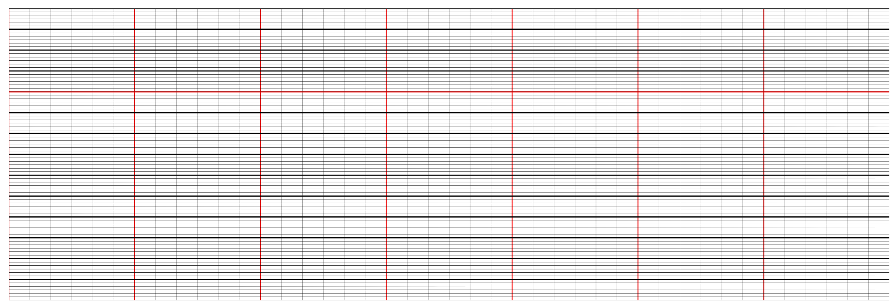
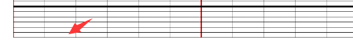

之前公司请外包做了一个体温单使用的zrender.js 但是代码比较复杂维护性比较低再加上自己技术也不行 最近闲下来的时候看了一下zrender的官网慢慢的摸索并读了下之前的代码,感觉实际并不难,就自己重新从零开始自己绘制了一个 其中包括了折线,圆点,阴影区域,垂直虚线,鼠标hover事件等众多内容
今天先说说怎么画一个网格 完成效果如下

先把样式基本代码写好
<template>
<div>
<div id="main">
</div>
</div>
</template>css
<style scoped>
#main{
height: 500px;
padding: 15px;
position: relative;
}
html,body{
height: 100%;
width: 100%;
margin: 0;
padding: 0;
}
canvas{
width: 100%;
height: 700px;
}
</style>js
<script>
import zrender from 'zrender'
export default {
name: 'HelloWorld',
data () {
return {
//多少个y轴坐标
xLineLen:{
//天数 7天
day:7,
//一天多少分段
time:6
},
canavsWidth:0, //画板宽度
canavsHeight:0, //画板高度
zr:"", //画板属性
yLineLen:{
XRegion:14, //X轴坐标分几个大块
XShare:6, //每块份几个小块
XLineArr:[4], //需要特殊处理的横线 冲上往下算
}
}
},
methods:{
init(){
this.zr = zrender.init(document.getElementById("main"))this.canavsWidth = this.zr.getWidth()
this.canavsHeight = this.zr.getHeight()
}
},
mounted(){
this.init()
}
}
</script>this.canavsWidth 为获取画板的宽度 同理下面为获取画板的高度绘制网格首先要明白x,y轴各需要多少格
首先x轴 我们要先展示1个星期的数据所有会有7个大格子 然后每天以4小时为一格来划分 所有我们先建立一格全局的变量
这里就定义出x轴线的个数了 接下来是y轴
yLineLen:{
XRegion:14, //X轴坐标分几个大块
XShare:6, //每块份几个小块
XLineArr:[4], //需要特殊处理的横线 冲上往下算
}XLineArr 表示格子中那条很长的红线
数据建好后我们在init里添加 2个方法 分别是创建x,y轴的坐标 this.yLine() //生成Y轴坐标
this.xLine() //生成X轴坐标添加完后再methods 里添加以上2个方法
先说yLine
//横坐标
let Xline = new zrender.Line({
shape:{
x1:0,
y1:this.canavsHeight,
x2:this.canavsWidth,
y2:this.canavsHeight
}
})
this.zr.add(Xline)这里是添加横坐标 是坐标轴最下面的那一条先 当然这个不应该写在这里当时为了显示出x,y初始坐标轴在这里写了 并不影响我们其他方法
x1,y1为开始坐标点x2,y2为结束坐标点从左到右
this.zr.add就是添加2条点并连接
const yWidth = this.canavsWidth/this.xLineLen.day
//循环显示竖线格子
for (let i = 0; i < this.xLineLen.day; i++) {
//纵坐标
let Yline = new zrender.Line({
shape:{
x1:yWidth*i,
y1:0,
x2:yWidth*i,
y2:this.canavsHeight
},
style:{
opacity:1,
lineWidth:1.5,
stroke:"#ff0000"
}
})
this.zr.add(Yline)
}这里的yWidth 代表的是一个大格子有好宽 用画布宽度除以前面我们定义的天数就是每一个大格子的宽度
然后我们循环我们定义的天数 style里
opacity 代表透明度
lineWidth 代表线段的宽度stroke 代表线段填充的颜色
这步完成界面应该就会出现7条红色的竖线
let yLinAll = this.xLineLen.day*this.xLineLen.time
for (let i = 0; i < yLinAll; i++) {
let Yline = new zrender.Line({
shape:{
x1:yWidth/this.xLineLen.time*i,
y1:0,
x2:yWidth/this.xLineLen.time*i,
y2:this.canavsHeight
},
style:{
opacity:1,
lineWidth:0.3,
stroke:"#000"
}
})
this.zr.add(Yline)
}yLinAll 代表一共有多少天 我们先算出总天数然后循环总天数这样我们就能画出每个大格子里的小格子了
style里的参数参考上一条 也可以查看官网这步完成y轴坐标就算是画好了接下来我们画x轴 在xLine方法里写 let xHeight = this.canavsHeight/this.yLineLen.XRegion
let XShareAll = this.yLineLen.XRegion*this.yLineLen.XSharexHeight 代表一个大格子的高度XShareAll 代表一个多少个小格子for (let i = 0; i < this.yLineLen.XRegion; i++) {
let color = "#000"
this.yLineLen.XLineArr.forEach(el => {
if (el == i) {
color = "#ff0000"
}
});
//横坐标 加粗
let Xline = new zrender.Line({
shape:{
x1:0,
y1:xHeight*i,
x2:this.canavsWidth,
y2:xHeight*i
},
style:{
opacity:1,
lineWidth:2,
stroke:color
}
})
this.zr.add(Xline)先循环把大格子循环出来
for (let a = 0; a < XShareAll; a++) {
//横坐标
let Xline = new zrender.Line({
shape:{
x1:0,
y1:xHeight/this.yLineLen.XShare*a,
x2:this.canavsWidth,
y2:xHeight/this.yLineLen.XShare*a
},
style:{
opacity:1,
lineWidth:0.1,
stroke:"#000"
}
})
this.zr.add(Xline)
}在循环出所有的小格子 入下图上下的格子 之前我们循环的是左右的格子

这步完成了 我们的体温单的坐标格子应该就画好了 时间原因今天就先写到这 下次写折线图和圆点的画法 折线图断线垂直虚线
第一次写文章写得不好不要喷我